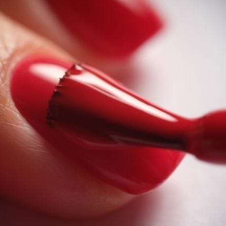
Gelpolish
Zit zeker 2 à 3 weken
Nagellak met de kwaliteit van gel. Bladert niet af en heeft een prachtige glans.
Meer info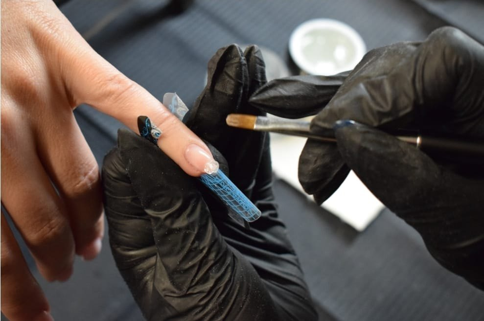
Nagelsalon en erkend opleider in Etten-Leur. Gespecialiseerd in extreme shapes en inlay kunstnagels, en ook voor semi permanente make-up.
Alle behandelingen voor natuurlijke nagels en kunstnagels. Van acryl, acryl-gel, gelpolish of BIAB tot Xtreme Stiletto's: alles is mogelijk.

Nagellak met de kwaliteit van gel. Bladert niet af en heeft een prachtige glans.
Meer info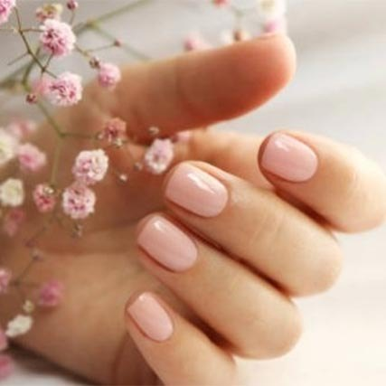
Builder In A Bottle, ook wel de "natural nail treatment". Dikker dan gellak, dunner dan acryl.
Meer info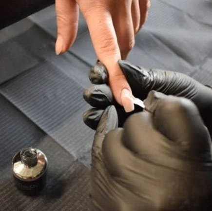
Nagels opbouwen, modelleren en verlengen. In elke vorm en lengte, tot Xtreme Stiletto's.
Meer info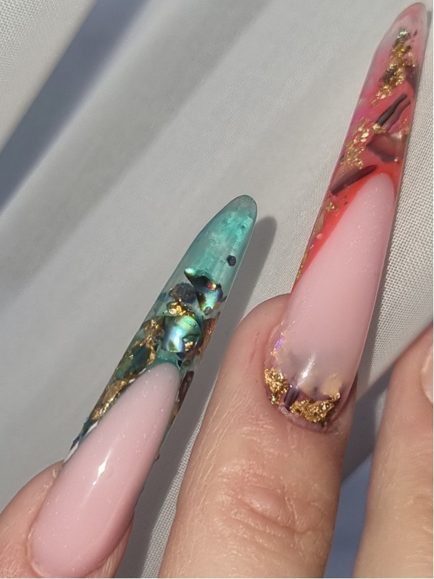
Reverse en inverted inlay met diepte-effect, en nailart met glitters, steentjes en one stroke.
Meer info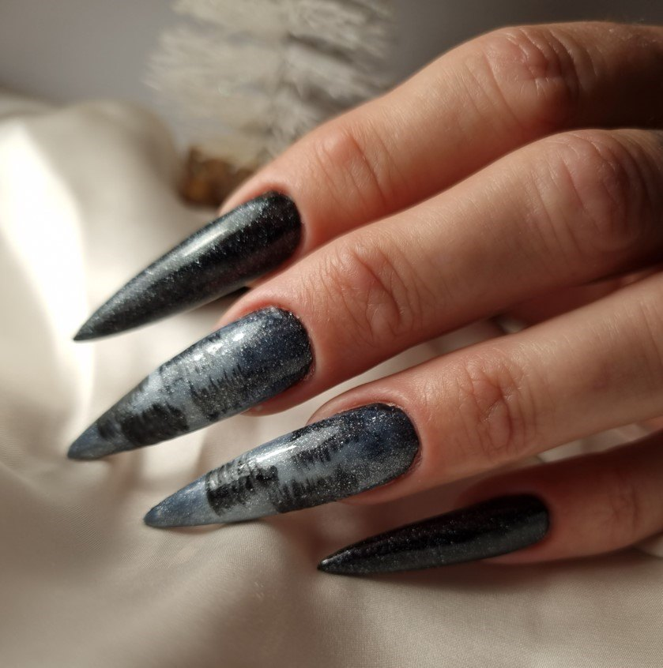
Kunstnagels die je met glue tabs, lijm of rubberbase op je eigen nagels aanbrengt.
Meer info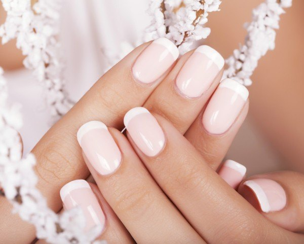
Een manicure of een set kunstnagels voor je trouwdag. Na de wittebroodsweken gratis verwijderd.
Meer infoDe nagels van een nagelbijter vragen om een speciale behandeling. Daarvoor hebben we een eigen Nagelbijt-arrangement. Vraag gerust wat de mogelijkheden zijn.
Het plaatsen en verwijderen van semi permanente make-up, voor wenkbrauwen en ogen. Xtreme Nails is een GGD goedgekeurde salon.
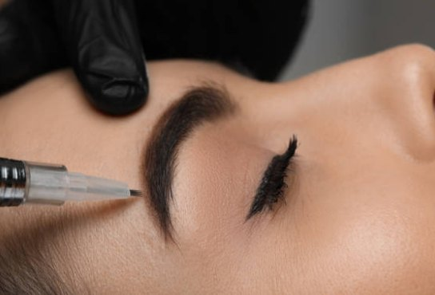
Ingeschaduwde wenkbrauwen met een natuurlijk ombre-effect. Na 1 à 2 jaar een opfrisbehandeling.
Meer info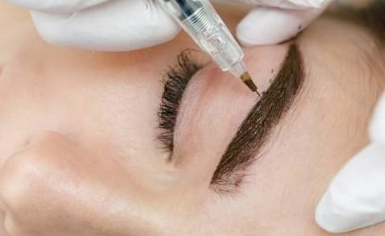
Hairstrokes aan het begin van de wenkbrauw, die overlopen in de schaduwtechniek van powderbrows.
Meer info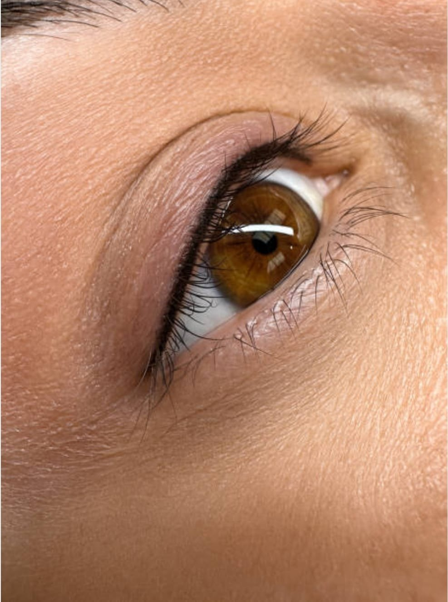
Een heel dun lijntje tussen de wimperhaartjes, boven of onder. Geeft een natuurlijk effect.
Meer info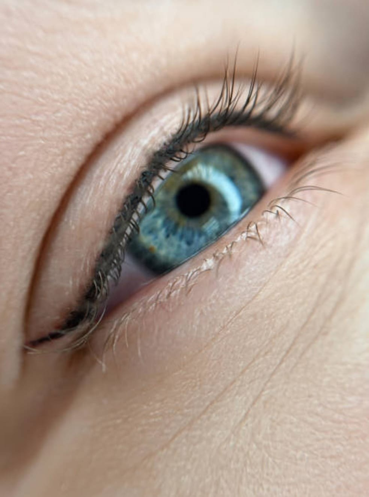
Voor wie een make-up look wil. Maakt de ogen groter en kan een liftend effect geven.
Meer infoErkend opleider, in samenwerking met verschillende grote merken in de nagelindustrie. Of je nu aan het begin van je nagelcarrière staat of al ervaring hebt: bij ons ben je welkom.
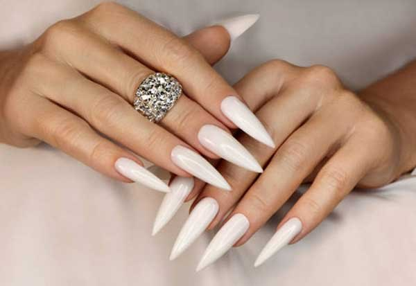
Lange, puntige nagels die een statement maken. Met sjablonen, tips en de juiste vijltechniek.
Meer info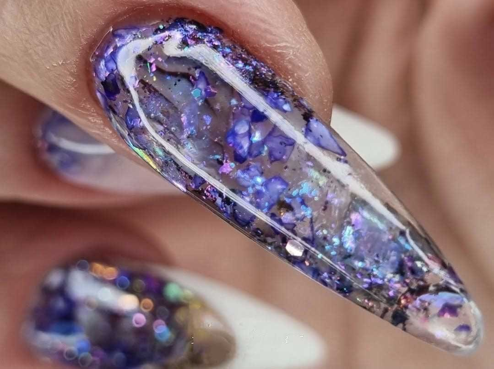
Inlay-ontwerpen met glitter, folie en kleine steentjes. Voor beginnende en ervaren stylisten.
Meer info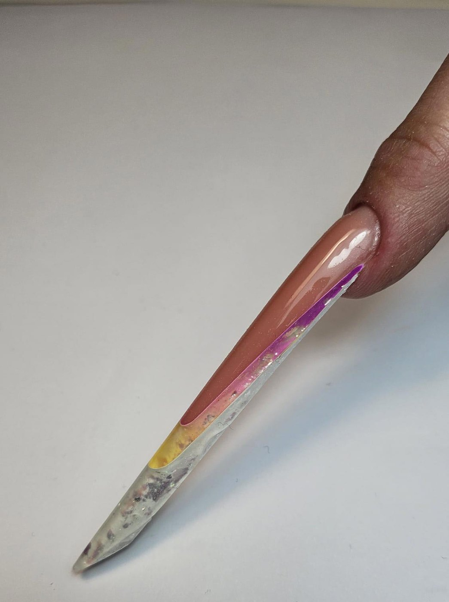
Een nagel van maar liefst 8 cm met een dubbele smile line. Werk op master niveau.
Meer info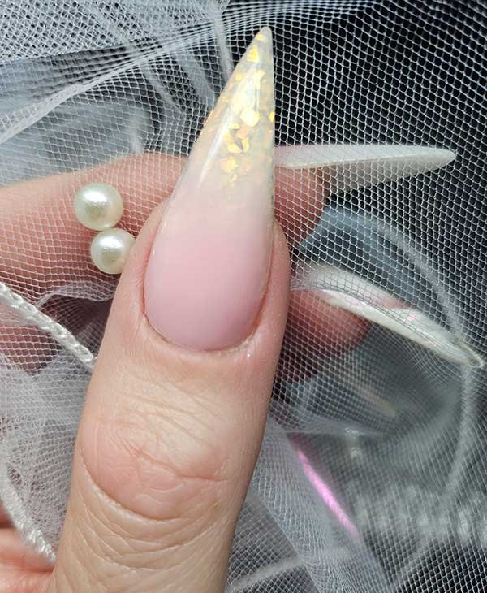
De perfecte overloop, met uitleg over het juiste gebruik van kleuren en glitters.
Meer info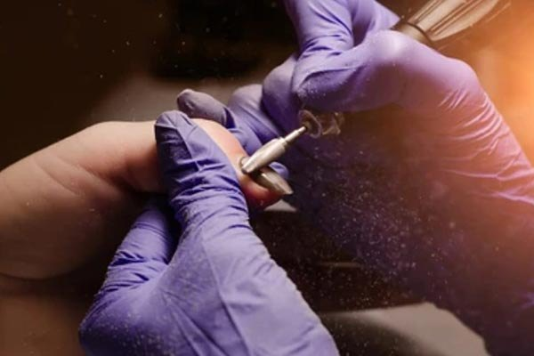
Leren werken met de frees en daarna opnieuw het product aanbrengen. Met certificaat.
Meer info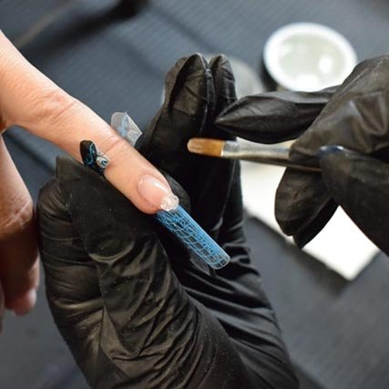
Jij bepaalt wat je wilt perfectioneren. Acryl, Next Gel of gel, van prep tot vijltechniek.
Meer infoDe allround opleiding is te volgen voor nieuwe en ervaren stylisten, en is op te splitsen in losse modules. De opleiding wordt ingedeeld naar jouw wensen. Data van de workshops gaan in overleg.
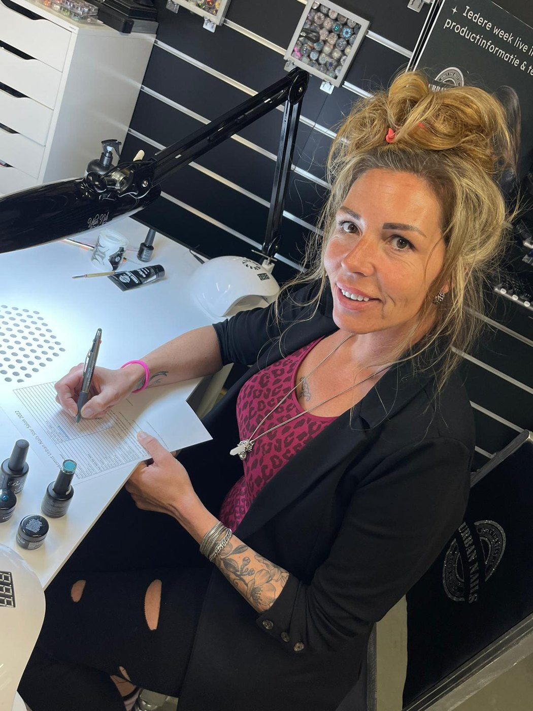
"Laat je verrassen door het verbluffende resultaat!"
In de salon aan de Kroonstraat in Etten-Leur kun je terecht voor alle behandelingen voor natuurlijke nagels en kunstnagels, en voor semi permanente make-up. We werken met verschillende hoogwaardige producten en door de vele kwalificaties zijn we altijd op de hoogte van de laatste trends.
Wat we in de salon doen, leren we ook door: als erkend opleider geven we opleidingen en workshops aan beginnende en ervaren nagelstylistes.
Bel of app ons, of laat hieronder je gegevens achter. We nemen zo snel mogelijk contact met je op.
Uitsluitend op afspraak.